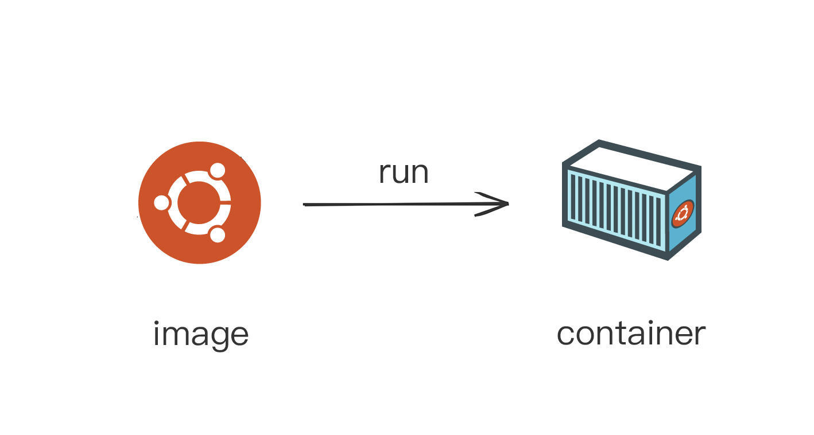
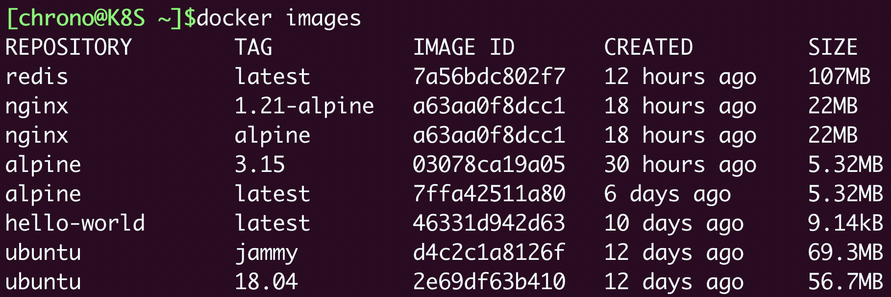
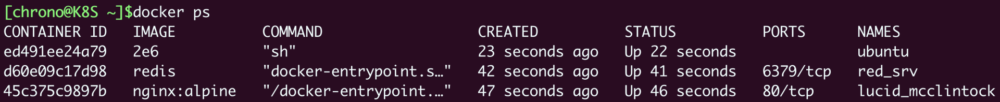
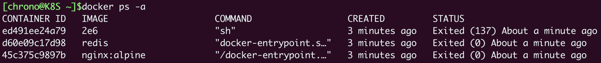
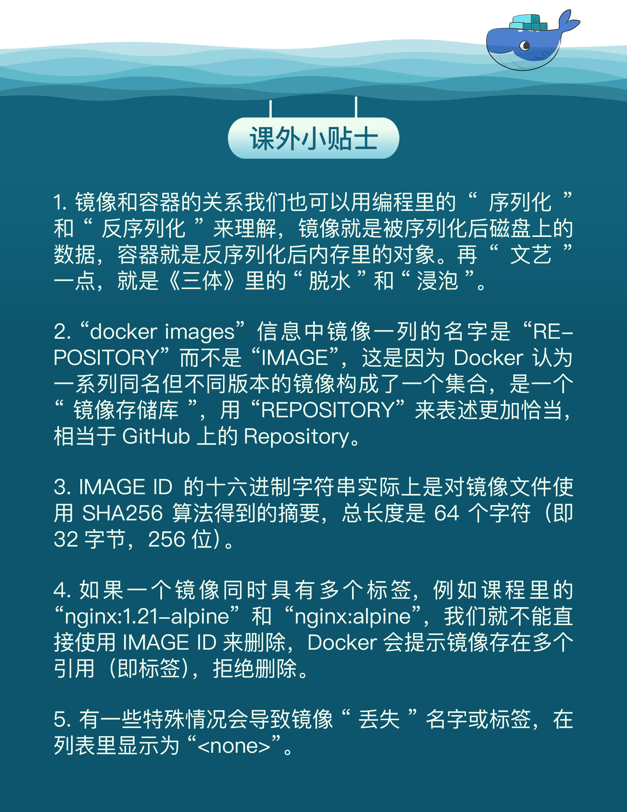

- 00 开篇词 迎难而上，做云原生时代的弄潮儿.md.html
- 00 课前准备 动手实践才是最好的学习方式.md.html
- 01 初识容器：万事开头难.md.html
- 02 被隔离的进程：一起来看看容器的本质.md.html
- 03 容器化的应用：会了这些你就是Docker高手.md.html
- 04 创建容器镜像：如何编写正确、高效的Dockerfile.md.html
- 05 镜像仓库：该怎样用好Docker Hub这个宝藏.md.html
- 06 打破次元壁：容器该如何与外界互联互通.md.html
- 07 实战演练：玩转Docker.md.html
- 08 视频：入门篇实操总结.md.html
- 09 走近云原生：如何在本机搭建小巧完备的Kubernetes环境.md.html
- 10 自动化的运维管理：探究Kubernetes工作机制的奥秘.md.html
- 11 YAML：Kubernetes世界里的通用语.md.html
- 12 Pod：如何理解这个Kubernetes里最核心的概念？.md.html
- 13 Job_CronJob：为什么不直接用Pod来处理业务？.md.html
- 14 ConfigMap_Secret：怎样配置、定制我的应用.md.html
- 15 实战演练：玩转Kubernetes（1）.md.html
- 16 视频：初级篇实操总结.md.html
- 17 更真实的云原生：实际搭建多节点的Kubernetes集群.md.html
- 18 Deployment：让应用永不宕机.md.html
- 19 Daemonset：忠实可靠的看门狗.md.html
- 20 Service：微服务架构的应对之道.md.html
- 21 Ingress：集群进出流量的总管.md.html
- 22 实战演练：玩转Kubernetes（2）.md.html
- 23 视频：中级篇实操总结.md.html
- 24 PersistentVolume：怎么解决数据持久化的难题？.md.html
- 25 PersistentVolume + NFS：怎么使用网络共享存储？.md.html
- 26 StatefulSet：怎么管理有状态的应用？.md.html
- 27 滚动更新：如何做到平滑的应用升级降级？.md.html
- 28 应用保障：如何让Pod运行得更健康？.md.html
- 29 集群管理：如何用名字空间分隔系统资源？.md.html
- 30 系统监控：如何使用Metrics Server和Prometheus？.md.html
- 31 网络通信：CNI是怎么回事？又是怎么工作的？.md.html
- 32 实战演练：玩转Kubernetes（3）.md.html
- 33 视频：高级篇实操总结.md.html
- 加餐 docker-compose：单机环境下的容器编排工具.md.html
- 加餐 谈谈Kong Ingress Controller.md.html
- 结束语 是终点，更是起点.md.html
- 捐赠
03 容器化的应用：会了这些你就是Docker高手
你好，我是Chrono。
在上一次课里，我们了解了容器技术中最核心的概念：容器，知道它就是一个系统中被隔离的特殊环境，进程可以在其中不受干扰地运行。我们也可以把这段描述再简化一点：容器就是被隔离的进程。
相比笨重的虚拟机，容器有许多优点，那我们应该如何创建并运行容器呢？是要用Linux内核里的namespace、cgroup、chroot三件套吗？
当然不会，那样的方式实在是太原始了，所以今天，我们就以Docker为例，来看看什么是容器化的应用，怎么来操纵容器化的应用。
什么是容器化的应用
之前我们运行容器的时候，显然不是从零开始的，而是要先拉取一个“镜像”（image），再从这个“镜像”来启动容器，像[第一节课]这样：
docker pull busybox
docker run busybox echo hello world
那么，这个“镜像”到底是什么东西呢？它又和“容器”有什么关系呢？
其实我们在其他场合中也曾经见到过“镜像”这个词，比如最常见的光盘镜像，重装电脑时使用的硬盘镜像，还有虚拟机系统镜像。这些“镜像”都有一些相同点：只读，不允许修改，以标准格式存储了一系列的文件，然后在需要的时候再从中提取出数据运行起来。
容器技术里的镜像也是同样的道理。因为容器是由操作系统动态创建的，那么必然就可以用一种办法把它的初始环境给固化下来，保存成一个静态的文件，相当于是把容器给“拍扁”了，这样就可以非常方便地存放、传输、版本化管理了。

如果还拿之前的“小板房”来做比喻的话，那么镜像就可以说是一个“样板间”，把运行进程所需要的文件系统、依赖库、环境变量、启动参数等所有信息打包整合到了一起。之后镜像文件无论放在哪里，操作系统都能根据这个“样板间”快速重建容器，应用程序看到的就会是一致的运行环境了。
从功能上来看，镜像和常见的tar、rpm、deb等安装包一样，都打包了应用程序，但最大的不同点在于它里面不仅有基本的可执行文件，还有应用运行时的整个系统环境。这就让镜像具有了非常好的跨平台便携性和兼容性，能够让开发者在一个系统上开发（例如Ubuntu），然后打包成镜像，再去另一个系统上运行（例如CentOS），完全不需要考虑环境依赖的问题，是一种更高级的应用打包方式。
理解了这一点，我们再回过头来看看第一节课里运行的Docker命令。
docker pull busybox ，就是获取了一个打包了busybox应用的镜像，里面固化了busybox程序和它所需的完整运行环境。
docker run busybox echo hello world ，就是提取镜像里的各种信息，运用namespace、cgroup、chroot技术创建出隔离环境，然后再运行busybox的 echo 命令，输出 hello world 的字符串。
这两个步骤，由于是基于标准的Linux系统调用和只读的镜像文件，所以，无论是在哪种操作系统上，或者是使用哪种容器实现技术，都会得到完全一致的结果。
推而广之，任何应用都能够用这种形式打包再分发后运行，这也是无数开发者梦寐以求的“一次编写，到处运行（Build once, Run anywhere）”的至高境界。所以，所谓的“容器化的应用”，或者“应用的容器化”，就是指应用程序不再直接和操作系统打交道，而是封装成镜像，再交给容器环境去运行。
现在你就应该知道了，镜像就是静态的应用容器，容器就是动态的应用镜像，两者互相依存，互相转化，密不可分。
之前的那张Docker官方架构图你还有印象吧，我们在第一节课曾经简单地介绍过。可以看到，在Docker里的核心处理对象就是镜像（image）和容器（container）：

好，理解了什么是容器化的应用，接下来我们再来学习怎么操纵容器化的应用。因为镜像是容器运行的根本，先有镜像才有容器，所以先来看看关于镜像的一些常用命令。
常用的镜像操作有哪些
在前面的课程里你应该已经了解了两个基本命令，docker pull 从远端仓库拉取镜像，docker images 列出当前本地已有的镜像。
docker pull 的用法还是比较简单的，和普通的下载非常像，不过我们需要知道镜像的命名规则，这样才能准确地获取到我们想要的容器镜像。
镜像的完整名字由两个部分组成，名字和标签，中间用 : 连接起来。
名字表明了应用的身份，比如busybox、Alpine、Nginx、Redis等等。标签（tag）则可以理解成是为了区分不同版本的应用而做的额外标记，任何字符串都可以，比如3.15是纯数字的版本号、jammy是项目代号、1.21-alpine是版本号加操作系统名等等。其中有一个比较特殊的标签叫“latest”，它是默认的标签，如果只提供名字没有附带标签，那么就会使用这个默认的“latest”标签。
那么现在，你就可以把名字和标签组合起来，使用 docker pull 来拉取一些镜像了：
docker pull alpine:3.15
docker pull ubuntu:jammy
docker pull nginx:1.21-alpine
docker pull nginx:alpine
docker pull redis
有了这些镜像之后，我们再用 docker images 命令来看看它们的具体信息：

在这个列表里，你可以看到，REPOSITORY列就是镜像的名字，TAG就是这个镜像的标签，那么第三列“IMAGE ID”又是什么意思呢？
它可以说是镜像唯一的标识，就好像是身份证号一样。比如这里我们可以用“ubuntu:jammy”来表示Ubuntu 22.04镜像，同样也可以用它的ID“d4c2c……”来表示。
另外，你可能还会注意到，截图里的两个镜像“nginx:1.21-alpine”和“nginx:alpine”的IMAGE ID是一样的，都是“a63aa……”。这其实也很好理解，这就像是人的身份证号码是唯一的，但可以有大名、小名、昵称、绰号，同一个镜像也可以打上不同的标签，这样应用在不同的场合就更容易理解。
IMAGE ID还有一个好处，因为它是十六进制形式且唯一，Docker特意为它提供了“短路”操作，在本地使用镜像的时候，我们不用像名字那样要完全写出来这一长串数字，通常只需要写出前三位就能够快速定位，在镜像数量比较少的时候用两位甚至一位数字也许就可以了。
来看另一个镜像操作命令 docker rmi ，它用来删除不再使用的镜像，可以节约磁盘空间，注意命令 rmi ，实际上是“remove image”的简写。
下面我们就来试验一下，使用名字和IMAGE ID来删除镜像：
docker rmi redis
docker rmi d4c
这里的第一个 rmi 删除了Redis镜像，因为没有显式写出标签，默认使用的就是“latest”。第二个 rmi 没有给出名字，而是直接使用了IMAGE ID的前三位，也就是“d4c”，Docker就会直接找到这个ID前缀的镜像然后删除。
Docker里与镜像相关的命令还有很多，不过以上的 docker pull、docker images、docker rmi 就是最常用的三个了，其他的命令我们后续课程会陆续介绍。

常用的容器操作有哪些
现在我们已经在本地存放了镜像，就可以使用 docker run 命令把这些静态的应用运行起来，变成动态的容器了。
基本的格式是“docker run 设置参数”，再跟上“镜像名或ID”，后面可能还会有附加的“运行命令”。
比如这个命令：
docker run -h srv alpine hostname
这里的 -h srv 就是容器的运行参数，alpine 是镜像名，它后面的 hostname 表示要在容器里运行的“hostname”这个程序，输出主机名。
docker run 是最复杂的一个容器操作命令，有非常多的额外参数用来调整容器的运行状态，你可以加上 --help 来看它的帮助信息，今天我只说几个最常用的参数。
-it 表示开启一个交互式操作的Shell，这样可以直接进入容器内部，就好像是登录虚拟机一样。（它实际上是“-i”和“-t”两个参数的组合形式）
-d 表示让容器在后台运行，这在我们启动Nginx、Redis等服务器程序的时候非常有用。
--name 可以为容器起一个名字，方便我们查看，不过它不是必须的，如果不用这个参数，Docker会分配一个随机的名字。
下面我们就来练习一下这三个参数，分别运行Nginx、Redis和Ubuntu：
docker run -d nginx:alpine # 后台运行Nginx
docker run -d --name red_srv redis # 后台运行Redis
docker run -it --name ubuntu 2e6 sh # 使用IMAGE ID，登录Ubuntu18.04
因为第三个命令使用的是 -it 而不是 -d ，所以它会进入容器里的Ubuntu系统，我们需要另外开一个终端窗口，使用 docker ps 命令来查看容器的运行状态：

可以看到，每一个容器也会有一个“CONTAINER ID”，它的作用和镜像的“IMAGE ID”是一样的，唯一标识了容器。
对于正在运行中的容器，我们可以使用 docker exec 命令在里面执行另一个程序，效果和 docker run 很类似，但因为容器已经存在，所以不会创建新的容器。它最常见的用法是使用 -it 参数打开一个Shell，从而进入容器内部，例如：
docker exec -it red_srv sh
这样我们就“登录”进了Redis容器，可以很方便地查看服务的运行状态或者日志。
运行中的容器还可以使用 docker stop 命令来强制停止，这里我们仍然可以使用容器名字，不过或许用“CONTAINER ID”的前三位数字会更加方便。
docker stop ed4 d60 45c
容器被停止后使用 docker ps 命令就看不到了，不过容器并没有被彻底销毁，我们可以使用 docker ps -a 命令查看系统里所有的容器，当然也包括已经停止运行的容器：

这些停止运行的容器可以用 docker start 再次启动运行，如果你确定不再需要它们，可以使用 docker rm 命令来彻底删除。
注意，这个命令与 docker rmi 非常像，区别在于它没有后面的字母“i”，所以只会删除容器，不删除镜像。
下面我们就来运行 docker rm 命令，使用“CONTAINER ID”的前两位数字来删除这些容器：
docker rm ed d6 45
执行删除命令之后，再用 docker ps -a 查看列表就会发现这些容器已经彻底消失了。
你可能会感觉这样的容器管理方式很麻烦，启动后要ps看ID再删除，如果稍微不注意，系统就会遗留非常多的“死”容器，占用系统资源，有没有什么办法能够让Docker自动删除不需要的容器呢？
办法当然有，就是在执行 docker run 命令的时候加上一个 --rm 参数，这就会告诉Docker不保存容器，只要运行完毕就自动清除，省去了我们手工管理容器的麻烦。
我们还是用刚才的Nginx、Redis和Ubuntu这三个容器来试验一下，加上 --rm 参数（省略了name参数）：
docker run -d --rm nginx:alpine
docker run -d --rm redis
docker run -it --rm 2e6 sh
然后我们用 docker stop 停止容器，再用 docker ps -a ，就会发现不需要我们再手动执行 docker rm ，Docker已经自动删除了这三个容器。

小结
好了，今天我们一起学习了容器化的应用，然后使用Docker实际操作了镜像和容器，运行了被容器化的Alpine、Nginx、Redis等应用。
镜像是容器的静态形式，它打包了应用程序的所有运行依赖项，方便保存和传输。使用容器技术运行镜像，就形成了动态的容器，由于镜像只读不可修改，所以应用程序的运行环境总是一致的。
而容器化的应用就是指以镜像的形式打包应用程序，然后在容器环境里从镜像启动容器。
由于Docker的命令比较多，而且每个命令还有许多参数，一节课里很难把它们都详细说清楚，希望你课下参考Docker自带的帮助或者官网文档（https://docs.docker.com/reference/），再多加实操练习，相信你一定能够成为Docker高手。
我这里就对今天的镜像操作和容器操作做个小结：
- 常用的镜像操作有
docker pull、docker images、docker rmi，分别是拉取镜像、查看镜像和删除镜像。 - 用来启动容器的
docker run是最常用的命令，它有很多参数用来调整容器的运行状态，对于后台服务来说应该使用-d。 docker exec命令可以在容器内部执行任意程序，对于调试排错特别有用。- 其他常用的容器操作还有
docker ps、docker stop、docker rm，用来查看容器、停止容器和删除容器。
课下作业
最后是课下作业时间，给你留两个思考题：
- 说一说你对容器镜像的理解，它与rpm、deb安装包有哪些不同和优缺点。
- 你觉得
docker run和docker exec的区别在哪里，应该怎么使用它们？
欢迎在留言区参与讨论，据说打字发言能把自己学到的新知识再加工一遍，可以显著提升理解哦。
我们下节课再见。- 
© 2019 - 2023 Liangliang Lee. Powered by gin and hexo-theme-book.